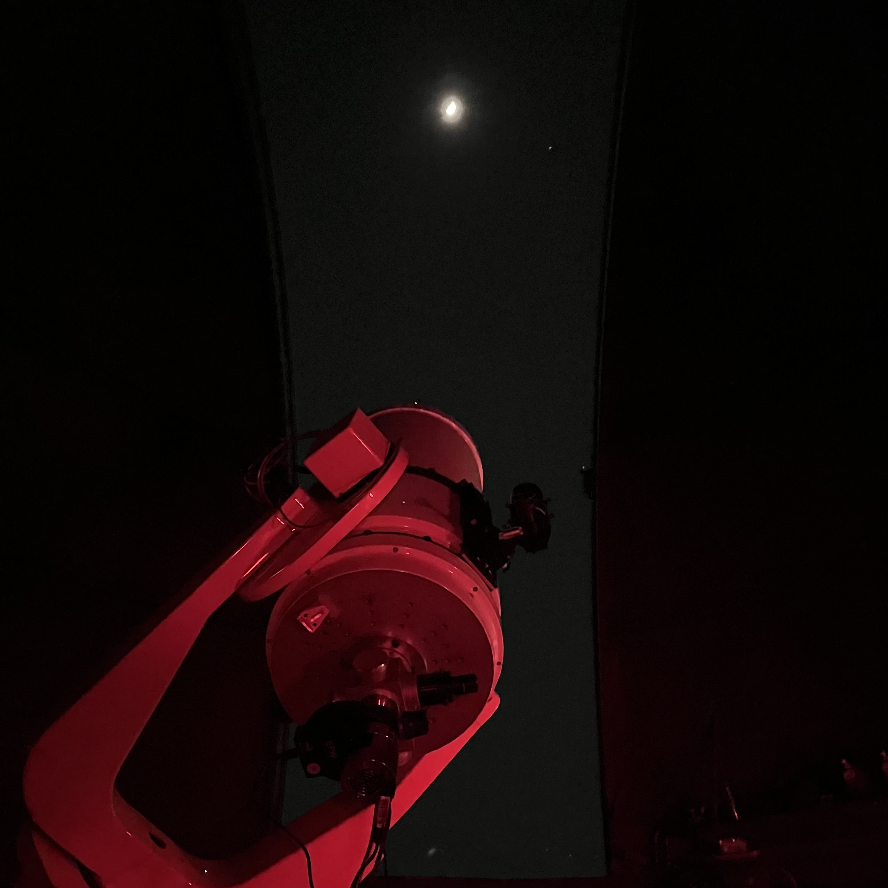

This page is a collection of the outreach and inreach initiatives I've been involved in recently. Both are very important to me and my journey as an astrophysicist — I had a largely negative experience with STEM growing up (kids are jerks, especially when they've figured out you're queer and you haven't), so I actually spent the first two years of undergrad as a film major. It was upon taking an introductory course in astronomy that I dicovered my affinity for this field, but more importantly it was the wonderful professors and grad students I met that gave me the courage to make the non-trivial switch. One of my driving goals since then has been to inspire that positive and encouraging enviroment more widely, both in academia directly with inreach but also with the public through outreach.
Outreach
Maryland Day
Maryland Day is an annual event during the spring where the public are invited to participate in various demonstrations, workshops, activities, and other you-name-its put on by the different departments and organizations at UMD. This year (my first!), I operated a C8 telescope, ran a game where participants had to match space objects to their names, and generally answered questions about astronomy. I'm hoping to develop an accessible, exoplanets-based activity for Maryland Day next year, with the goal of connecting folks more deeply to the exoplanet science they may hear about in their daily lives.

SAS Open Houses
I was a member of U of M's Student Astronomical Society while I was in undergrad, and using my telescope training I was able to help run their open houses. During these open houses, we would invite the public to come up onto the roof of Angell Hall and observe through the 0.4 meter telescope in the dome as well as several smaller 'scopes we would set up on the rooftop. If it was cloudy, we would still offer tours of the dome and talk through how the different components of the dome and 0.4 meter worked.
Inreach
APPA (Astronomy and Physics Pride Alliance)
I am in the process of taking over UMD's APPA as president, which stands for Astronomy and Physics Pride Alliance. Currently, APPA runs a biweekly coffee hour to encourage conversation between queer students (grad and undergrad) of both departments. I hope to also incorporate a book club where we learn ways to promote community and belonging within STEM, as well as find ways to potentially connect with queer faculty and post-docs while still maintaining an overall student focus (perhaps through special coffee hours where we invite non-students, or something similar).
Community and Belonging Committee
This a committee internal to the astronomy department that discusses and implements ways to promote community and belonging. This includes addressing department concerns, inviting special colloquium speakers, and educating ourselves on what we can do better, among other things.